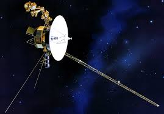
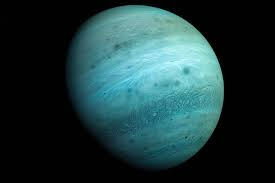

Планета Нептун – це восьма, найвіддаленіша від сонця, планета в нашій системі. Вона близька за складом до свого сусіда урану, її атмосфера містить водень і "гелій", а також трохи метану. Саме завдяки метану Нептун такого синього кольору. Температура в атмосфері досягає – 220 ° C
Нептун вважається крижаним гігантом, в цю групу він входить разом з сусідом ураном. Хоча Нептун являється найменшим з чотирьох "гігантів" Сонячної системи. Названо планету іменем римського бога морів, який аналогічний грецькому богу Посейдону.
Відстань від нептуна до cонця 4,55 млрд. км. Радіус планети близько 25000 км, це четвертий в Сонячній системі розмір екватора. У неї є своє магнітне поле.
На Нептуні дуже сильний вітер. Це єдина планета в нашій системі, де дмуть вітри з середньою швидкістю близько 2000 км/год.
Навколо планети є шість кілець, які складаються з крижаних частинок. Вчені вважають їх досить новими.
На Землі відомо про чотирнадцять супутників Нептуна. Можливо є й інші, але про них нічого не відомо, тому що з Землі досить складно вивчати Нептун в подробицях. Перший виявлений супутник назвали Тритон.
Імена інших: Нереїда, Лариса, Протей, Деспіна, Галатея, Таласса, Наяда, Сао, Галімеда, Лаомедея, Несо, Псамафа, S/2004 N1.
Нептун відкрили в 1846 році. Це перша планета, яку відкрили грунтуючись на математичних розрахунках. До цього моменту люди і не думали, що така планета може існувати. Хоча знали про неї дуже мало аж до 1989 року.
Саме тоді до Нептуна прилетів апарат вояджер-2 . Цей космічний апарат діє до сих пір, його основна мета полягає у вивченні далеких планет. Саме він досяг спочатку Урану , а потім і Нептуна . Під час своєї місії він зробив велику кількість знімків. Багато відомої сьогодні інформації отримали саме тоді.
Сьогодні Нептун залишається досить таємничою для людини планетою.
Після експедиції Вояджер-2 учені не отримували про планету нової інформації. В основному вся інформація формується на розрахунках учених і носить досить теоретичний характер. Вивчення цієї планети ускладнюється великою відстанню між нами і Нептуном. Можливо, коли-небудь ми почуємо про нові відкриття, пов'язані з синім гігантом на околиці Сонячної системи.